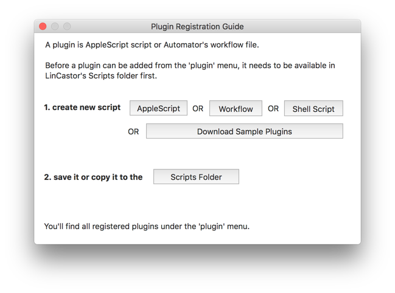
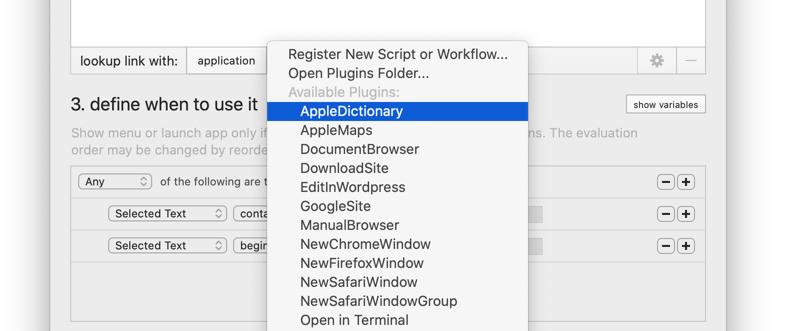

You can customize what LinCastor Browser does with a link or selected text by modifying URL by using variables, invoking callbacks or by creating custom plugin.
For example: launch a command line tool to download entire website recursively or do a lookup in online documentation and display it in integrated web view.
All plugins must go into LinCastor Browsers’s “Scripts" folder. This is Apple’s sandbox restriction. The easiest way to create new plugin is to use the registration dialog. Go to: Hep -> Install Plugins…

Download sample plugins and copy the one you want to use into the Scripts Folder and modify it, if necessary. You’ll find source code for all these plugins in the github repository.
For more information see github documentation page.
Once you place plugin script in to the folder, it will show up as available plugin, which you will then be able to associate with an action.
